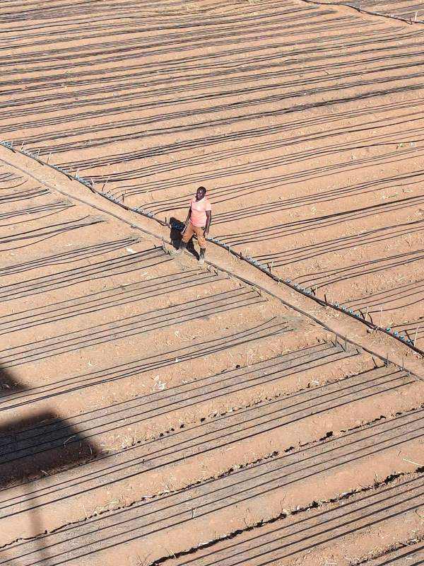
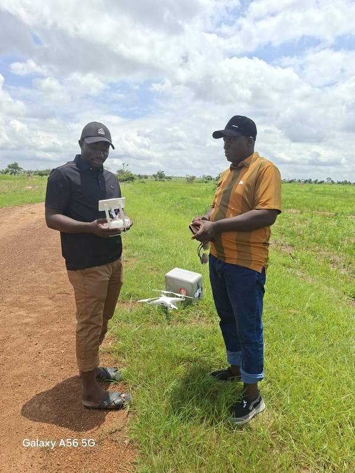
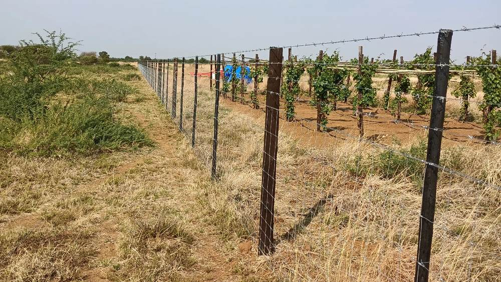
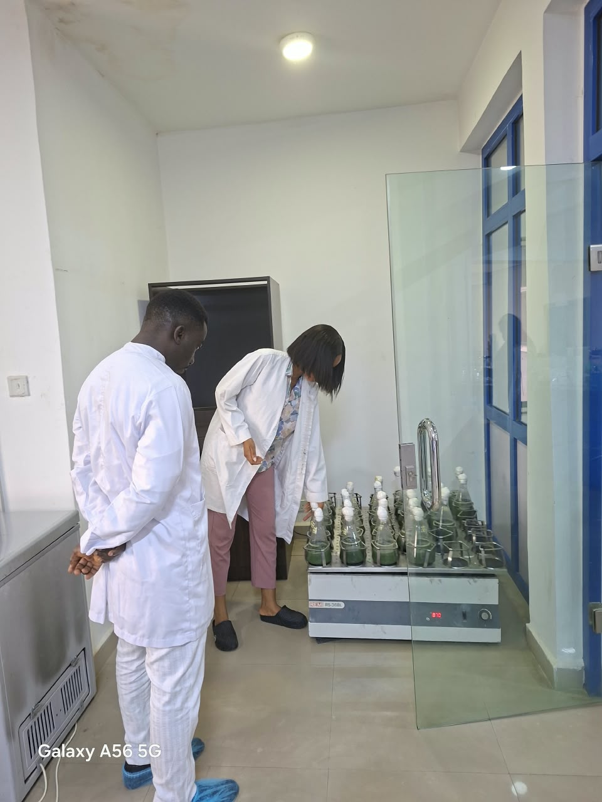
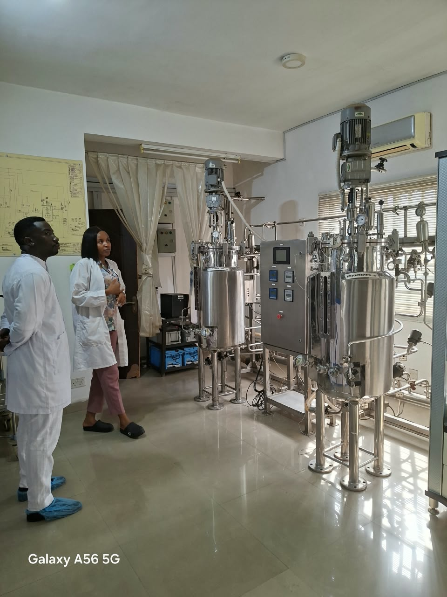
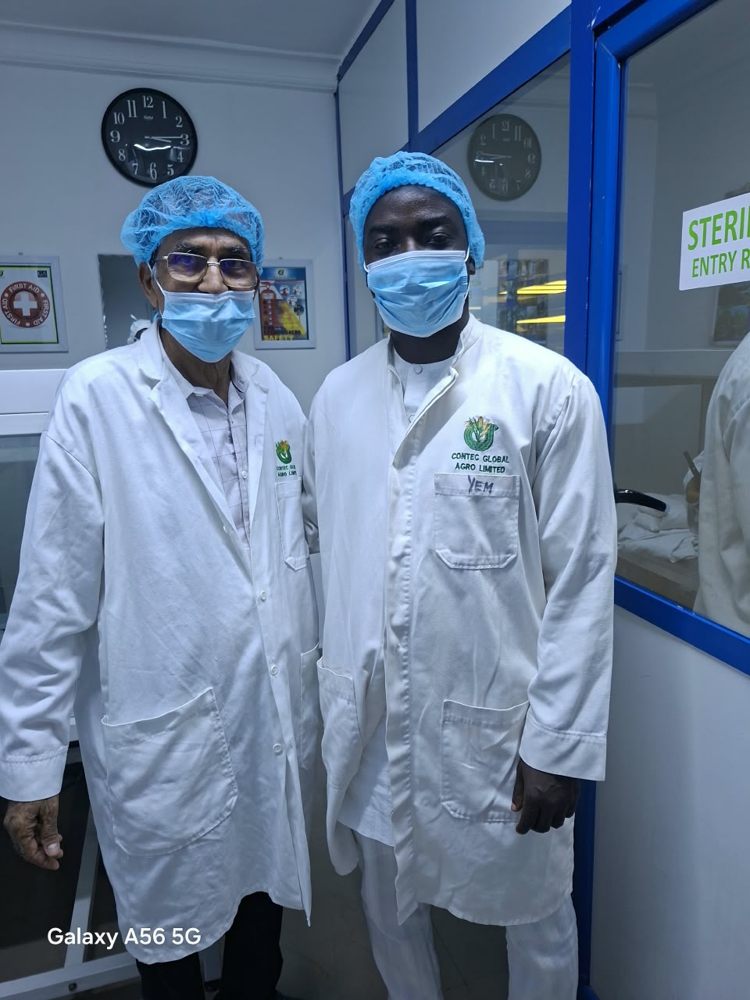
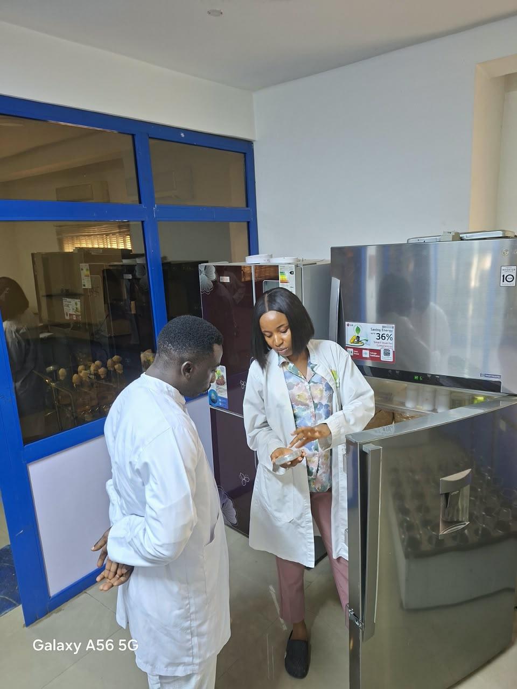
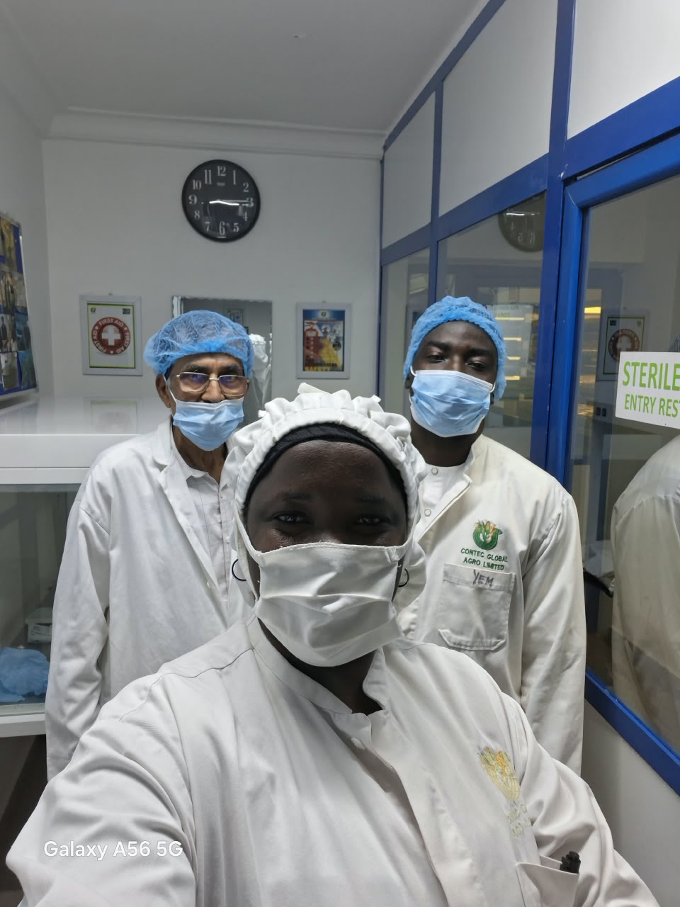

Advice from a working farm
Our land, our vision and why we farm the way we do.
Rehoboth Solutions Limited owns and manages more than 315 hectares of farmland at Garin Mallam, along the Jalingo to Lau road.
We are cultivating about half of that land today and bringing the rest into use in stages. This lets us grow carefully, learn from each season and keep improving how we farm.
We use the farm to try out the methods and technology we recommend. When we advise you on irrigation, soil or crop monitoring, it comes from what we have done on our own land.
- Location
- Garin Mallam, Jalingo to Lau road



Where we are going
Our vision
To produce food through organic-focused farming and help safeguard food security across Africa, giving farmers a reliable living.
Our mission
- Grow kitchen staples that support Nigeria's food security.
- Bring practical farm technology within reach of farmers of every size.
- Help farms grow more using less water, fertiliser and fuel.
- Train the next generation of farmers and agricultural professionals.
- Develop our land responsibly and prove each method on our own farm first.
More from the farm
Additional scenes from our work at Garin Mallam — preparing land, planting, and bringing in the harvest.




